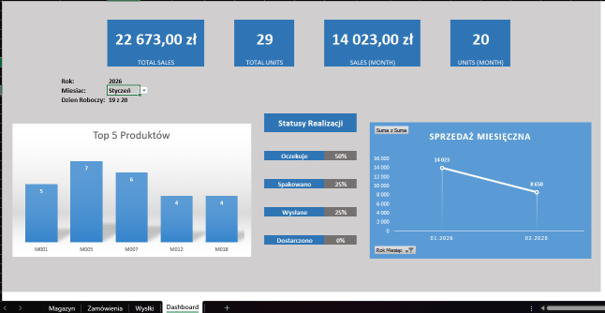
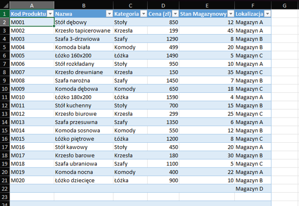
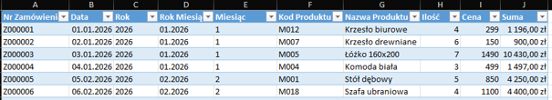
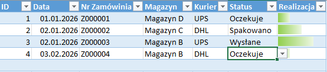

Sales & Warehouse Management Dashboard
An interactive dashboard built in Microsoft Excel for monitoring sales performance, order fulfilment status and warehouse stock levels. The report enables rapid evaluation of key business metrics through pivot tables, slicers and conditional formatting.
Key features
- Monthly sales trend analysis
- Total sales value & units sold KPIs
- Top 5 best-selling products
- Order status tracking (Pending, Packed, Shipped, Delivered)
- Inventory & warehouse stock overview
- Dynamic year & month filters via slicers
- Drill-down into individual orders & products
KPIs tracked




Opis projektu
Celem projektu było stworzenie interaktywnego dashboardu umożliwiającego analizę sprzedaży oraz monitorowanie realizacji zamówień i stanów magazynowych. Raport pozwala szybko ocenić wyniki sprzedaży, kontrolować proces realizacji zamówień oraz analizować najważniejsze wskaźniki biznesowe.
Projekt został wykonany w programie Microsoft Excel z wykorzystaniem tabel, tabel przestawnych, wykresów oraz elementów interaktywnych.
Zastosowane narzędzia
- Microsoft Excel
- Tabele Excel
- Tabele przestawne
- Wykresy kolumnowe i liniowe
- Fragmentatory (Slicery)
- Formatowanie warunkowe
- Formuły Excel
- Dashboard menedżerski
Funkcjonalności raportu
- Analiza sprzedaży według miesięcy
- Prezentacja łącznej wartości sprzedaży
- Monitorowanie liczby sprzedanych produktów
- Prezentacja pięciu najlepiej sprzedających się produktów
- Monitorowanie statusów realizacji zamówień (Oczekuje, Spakowano, Wysłane, Dostarczono)
- Filtrowanie danych według roku oraz miesiąca
- Analiza danych magazynowych
- Podgląd szczegółów zamówień i produktów
Dane wykorzystane w projekcie
Projekt wykorzystuje trzy główne zestawy danych: bazę produktów, historię sprzedaży oraz historię realizacji zamówień. Każdy rekord zawiera m.in. kod produktu, nazwę, kategorię, cenę, stan magazynowy, lokalizację magazynu, datę sprzedaży, numer zamówienia, ilość, wartość sprzedaży oraz status realizacji.
Umiejętności zaprezentowane w projekcie
- Projektowanie dashboardów biznesowych
- Analiza danych sprzedażowych
- Modelowanie danych w Excelu
- Tworzenie tabel przestawnych
- Budowanie interaktywnych raportów
- Wizualizacja danych
- Projektowanie wskaźników KPI
- Tworzenie wykresów biznesowych
- Praca z dużymi zestawami danych
- Przygotowywanie raportów menedżerskich
Wartość biznesowa
Projekt wspiera podejmowanie decyzji poprzez szybki dostęp do najważniejszych informacji dotyczących sprzedaży i magazynu. Dashboard pozwala identyfikować najlepiej sprzedające się produkty, monitorować realizację zamówień oraz analizować trendy sprzedażowe, co pomaga usprawnić planowanie zapasów i procesów logistycznych.